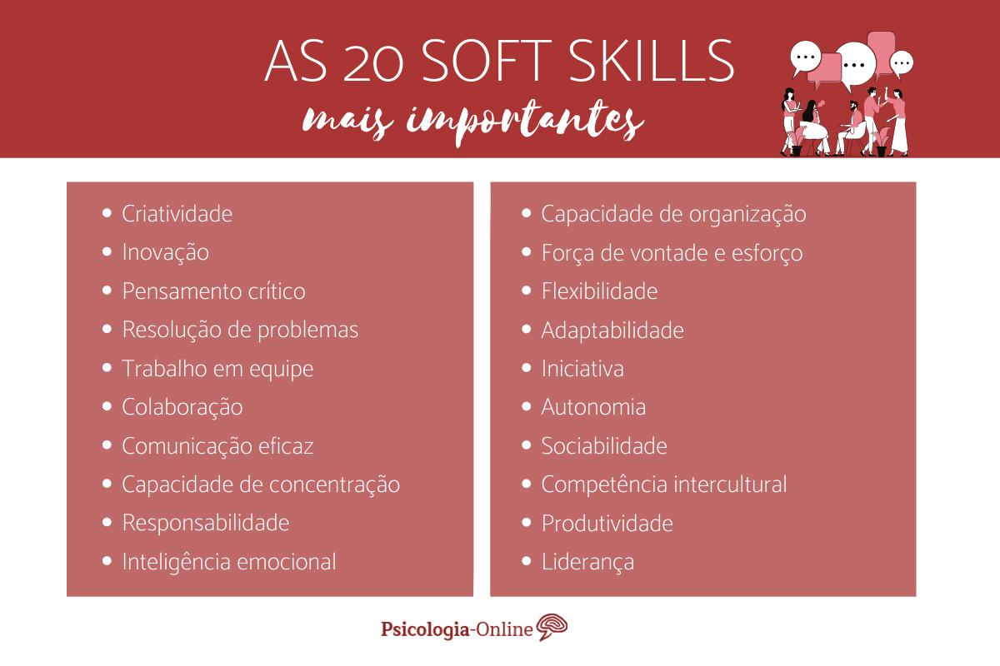

O que são softskills e qual sua importância para cargos de liderança?
- Soft skills são habilidades comportamentais que dizem respeito sobre como nos comportamos em relação à outras pessoas habilidades como comunicação, empatia e escuta ativa são exemplos de soft skills. Além disso, características como paciência, proatividade e empatia são atributos muito procurados quando se tratando de soft skills, afinal, profissionais que não buscam desenvolver tais características tendem a não atuar bem em equipes.
- Soft skills são ditas como complementares das hard skills, que são as habilidades técnicas, desenvolvidas por meio de estudos e experiência. Enquanto as hardskills são habilidades técnicas que se desenvolvem no profissional por meio de esforço e dedicação, as soft skils, apesar de também exigirem algum trabalho braçal do profissional para o seu desenvolvimento, tendem a estar intimamente ligadas à personalidade da pessoa.
- É importante salientar que diversas soft skills podem ser trabalhadas com o esforço constante do colaborador. Escuta ativa e paciência, a exemplo, são atributos que podem ser desenvolvidos por qualquer ser humano, na medida de suas limitações pessoais. A exemplo de habilidades que também podem ser desenvolvidas, temos a comunicação e a empatia.
Importância das soft skills em harmonia com hard skills
- Em uma equipe de desenvolvedores, é de suma importância a comunicação entre os colaboradores. Sabe-se que equipes de desenvolvimento, anáise e até mesmo de banco de dados possuem diversos profissionais operando simultaneamente. Sem a comunicação clara e eficiente, esses colaboradores podem enfrentar diversos problemas de desorganização, trabalhos repetidos, trabalhos não realizados (pois foi confiado que o outro colaborador faria, mas que não lhe foi comunicada a compentência), dentro vários outros.
- Em um projeto com profissionais de múltiplas áreas (design, desenvolvedores, banco de dados...), é necessária a comunicação entre eles para que o projeto se comunique bem. A exemplo no desenvolvimento de um site, sabe-se que existem diversas áreas sendo aplicadas em seu cerne. Além dos desenvolvedores de front e back-end, também pode-se falar em designers, pesquisadores, testadores, analistas de dados... Além de gestores e clientes.
- Cargos de gestão exigem um bom desenvolvimento de soft skills, seja no que se refere à comunicação do gestor ou da sensibilidade para identificar pontos fortes e fracos do time. A exemplo, um gestor de um projeto tem como principal função a comunicação com a sua equipe. Tal comunicação deve ser feita de maneira eficiente e compreensiva, tomando-se o cuidado para não haver mal entendidos ou tons agressivos que podem desestabilizar o bom funcionamento do time. Além disso, é também de suma importância que o gestor identifique precisamente os pontos fracos e fortes de cada integrante para que sejam devidamente realocados em suas funções.
- Áreas que tem contato direto como cliente também tem como base o uso de soft skills, tanto para negociações quanto para compreender as necessidades e receios dos clientes. Afinal, a satisfação final da pessoa que contratou os serviços é o objetivo de todo o trabalo desempenhado pelo time. Entretando, sem uma ideia clara do que o cliente deseja que seja realizado, todo o esforço pode ser em vão. Por isso, é imprescindívle a presença de um profissional que entenda as necessidades do cliente.
Exemplos de soft skills no mercado de trabalho
- Tech lead altamente capacitado tecnicamente, mas que não tem boas habilidades comunicativas.
- Em que pese o nível técnico, pode apresentar sérias dificuldades em passar seus conhecimentos para o restante da equipe que depende dele. O profissional que atua em cargos de especialista ou gestão deve trabalhar bem suas soft skills, pois em um time de colaboradores, o mesmo atuará como autoridade entre os demais e será procurado para prestar esclarecimentos, tirar dúvidas e passar feedbacks sobre os demais.
- Pode não saber dar feedbacks construtivos para a equipe e, consequentemente, afetando negativamente o desempenho do time. É importante também ter em mente que todos os envolvidos no desenvolvimento de um projeto são pessoas e, portanto, detentoras de sentimentos. Algumas mai sensíveis, outras menos. Todavia, uma pessoa mais sensível a comentários ásperos pode ter todo seu desempenho comprometido. Por isso, o profissional também deve saber como criticar um trabalho ou comportamento não desejado.
- Um product manager com alto conhecimento técnico sobre determinada linguagem e que também tem boas habilidades comunicativas
- Além da contribuição técnica, o profissional poderá passar feedbacks de maneira eficiente para o restante da equipe. Tais feedbacks dizem respeito a aspectos positivos e negativos do trabalho desempenhado. É, portanto, importante perceber que a comunicação é uma peça chave para cargos de gestão, mostrando que as soft skills são imprescindíveis no meio profissional. Além disso, a habilidade comunicativa do profissional poderá ser utilizada para eventuais treinamentos e reuniões com demais colaboradores.
- Profissional em cargo de gestão com habiliades ténicas, comunicativas e que identifica pontos positivos e negativos dos demais colaboradores
- Para cargos de gestão, é o profissional com as características ideais, se somadas à paciência e competência. O profissional com hard skills e essas soft skills desenvolvidas atua como verdadeuro líder estratégico de uma equipe, modelando as funções dos colaboradores de acordo com seus pontos positivos e sopesando os pontos negativos. Para tanto, o profissional acaba até mesmo sendo exemplo de comportamento e eficiência para o restante do time.
Abaixo, mais alguns exemplos de soft skills
